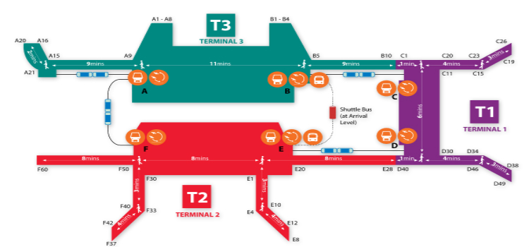

飞机航线和机场往返交通
中国各城市直飞新加坡的航班非常频繁，除直飞航班外，亦有不少价格优惠的转机航班可供选择。目前国内直飞至新加坡的城市有沈阳、大连、北京、天津、青岛、济南、太原、上海、杭州、南京、宁波、厦门、福州、无锡、南昌、武汉、长沙、郑州、广州、深圳、汕头/揭阳、海口、成都、重庆、昆明、丽江、南宁、西安、香港等。航空公司包括中国国际航空航班、新加坡航空航班、新加坡胜安航空、春秋航空、西部航空、重庆航空、四川航空、中华航空航班、厦门航空、中国东方航空航班、南方航空、海南航空、深圳航空、国泰航空航班、虎航航班、联合航空航班、捷星亚洲航空航班、酷航航班等。
新加坡樟宜机场

地址：机场林荫道，Airport Blvd, Singapore
查询电话：+65 6595 6868
网站：http://www.changiairport.com/
还可以以以下网址下载樟宜国际机场的官方手机应用程序iChangi，航班时间、登机口、购物、餐饮信息一应俱全。
网址：http://www.changiairport.com/
机场往返交通指引
地铁
从 2 号或 3 号航站楼步行到达地铁站
机场至市区
如欲前往市区，请在丹那美拉（Tanah Merah）站换乘西行列车。樟宜机场站至丹那美拉站西向最后一班列车的离站时间为晚上 11:18。
市区至机场
如欲前往樟宜机场，请在丹那美拉（Tanah Merah）站换乘东行列车。周一至周六，首班列车抵达樟宜机场站的时间为早上 5:26，周日和公共假日则为早上 5:54。
公共巴士
机场至市区
乘坐 36 号公共巴士可前往市区。首班车的到达时间约为早上 6:00，末班车的出发时间约为晚上 11:00 前。单程票价约 2.50 新元，车程约一小时。巴士站位于1号、2号和3号航站楼的地下巴士停车场。请备好零钱，车上不找零。
市区至机场
巴士将在1号、2号和3号航站楼停靠。乘坐 36 号公共巴士可由机场前往市区，单程票价约 2.50 新元，车程约一小时。请备好零钱，车上不找零。
德士（的士）
离开樟宜机场
乘客可在每个航站楼的抵达层搭乘德士。前往市区的费用在 18 至 38 新元之间，车程约为 30 分钟。计程收费，且所有从机场出发的行程还需支付机场附加费：
5 新元机场附加费：下午 5:00 至 午夜（周五至周日）
3 新元机场附加费：其他时段
午夜附加费，总计程费用的 50%：午夜 至 早上 6:00
繁忙时段附加费，总计程费用的 25%：早上 6:30 到早上 9:30（周一至周五）及下午 6:00 到午夜（周一至周日）
乘客可在街边搭乘或通过您的酒店预订。请联系以下任一德士运营商：
Comfort 或 Citycab 电话：(65) 6552 1111
Premier Taxis 电话：(65) 6363 6888
Prime Taxi 电话: (65) 6778 0808
SMRT 电话：(65) 6555 8888
Transcab 电话：(65) 6555 3333
豪华轿车与大型出租车
如需能够容纳多人的专用出租车，请前往抵达大厅的地面交通柜台（24 小时开放）。
四座轿车：从机场出发的单程费用为 55.00 新元*
七座大型轿车：从机场出发的单程费用为 60.00 新元*
* 每多乘一站需额外支付 15.00 新元
以下为地面交通柜台的电话：
1号航站楼电话：(65) 6543 1985
2号航站楼电话：(65) 6546 1646
3号航站楼电话：(65) 6241 3818（主要预订热线）
更多信息可参阅樟宜国际机场的网站
网址：http://www.changiairport.com/
水路
除了航空飞行，亦可在上海、深圳、北京、香港等港口搭乘游轮到达新加坡。

新加坡滨海湾游轮中心
地址：61 Marina Costal Drive, Singapore 018956
查询网站：http://mbccs.com.sg/
前往方式：Marina South Pier地铁站
新加坡游轮中心
地址：1 Maritime Square, Singapore 099253
查询电话：+ 65 6513 2200
前往方式：HarbourFront 地铁站
陆路
如您由马来西亚出发，可以通过两个提供24小时通关服务的陆路关卡进入新加坡。
大士陆路关卡
地址：601 Jalan Ahmad Ibrahim, Singapore 018956
兀兰陆路关卡
地址：21 Woodlands Crossing, Singapore 018956